4
Making Arduino Faster
This chapter is all about finding out how fast your Arduino is and squeezing it for that extra bit of horse-power when you need it.

How Fast Is an Arduino?
Before you start worrying about improving the speed of your sketches, let’s take a moment to benchmark your Arduino to see just how it compares with other computers, starting with the oft-quoted MHz and GHz.
An Arduino Uno is clocked at 16 MHz. As most instructions (adding or storing a value in a variable) are executed in a single clock cycle, that means the Uno can do 16 million things in one second. Sounds pretty good, doesn’t it? The story is not that simple, however, as the C that you write in a sketch expands into quite a few instructions.
Now contrast that with the author’s aging Mac laptop that has two processors that are each clocked at 2.5 GHz. My laptop has a clock frequency of over 150 times the frequency of the Arduino. Albeit, the processor takes a few more clock cycles to do each instruction, but as you would expect, it is a lot faster.
Let’s try running the following test program on both an Arduino and a slightly modified version on my Mac:
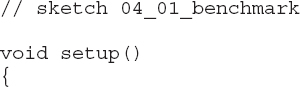
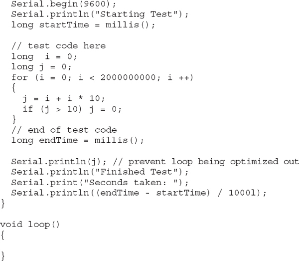
NOTE You can find the C counterpart to this code in the download area for code on the book’s website.
Here are the results: on a 2.5-GHz MacBook Pro, the test program took 0.068 seconds to run, whereas on an Arduino Uno, the code took 28 seconds to execute. The Arduino is roughly 400 times slower for this particular task.
Comparing Arduino Boards
Table 4-1 shows the result of running this test on a few different Arduino boards.
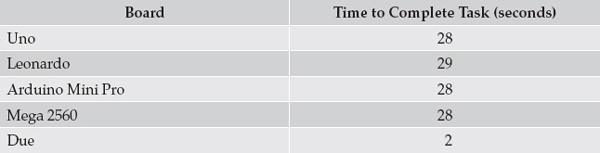
Table 4-1 Arduino Performance Test Results
As you can see, the results for most of the boards are consistent, however, the Due results are impressive—more than ten times faster than the other boards.
Speeding Up Arithmetic
As an exercise let’s change the benchmark code that we just used and do the arithmetic with floats rather than longs. Both are 32-bit numbers, so you might expect the time to complete the task to be similar. An Arduino Uno is used in the following test.
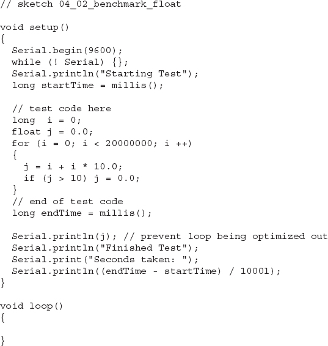
Unfortunately, the task takes a lot longer using floats. This example takes the Arduino some 467 seconds instead of 28. So, by changing to floats, my code became about 16 times slower than when I used doubles. To be fair, some of that performance cost was probably also due to converting between float and integer types, which is also quite costly in terms of time.
Do You Really Need to Use a Float?
A common misconception is that if you are measuring something like temperature, then you need to store it in a float because it will often be a number like 23.5. In fact, you may sometimes wish to display the temperature as a float, but you do not need to store it as a float in your sketch.
An analog input results in an int being read, in fact, only 12 bits of an int, which is a number between 0 and 1023. You can put those 12 bits into a 32-bit float if you like, but you will not be making the data any more accurate or precise.
This sensor reading could, for example, correspond to a temperature in degrees Celsius (C). One commonly used sensor (the TMP36) has an output voltage proportional to the temperature. The flowing calculation can often be found in sketches to convert an analog reading between 0 and 1023 into a temperature in degrees C.
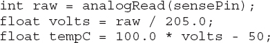
But you actually only need to represent that number in floating point form when you display it. Other things you need to do with the temperature, for example, comparing it or averaging several temperature readings, will be much faster if the arithmetic is done in the temperature’s raw int state.
Lookup vs. Calculate
As you have seen, it’s best to avoid floats. But if you want to make a sine wave using an analog output, then, as the word sine suggests, you need to use the math sin function to “draw” the waveform on the analog output. To plot a sine wave on the analog output, you step an angle through 2π radians, and the value that you send to the analog output is the sin of that angle. Well, actually it’s a bit more complicated because you need to center the waveform about an analog output of half the maximum.
The following code generates a sine wave in 64 steps per cycle on an Arduino Due’s DAC0 output. Note that only an Arduino with true analog output like the Due works for this experiment.
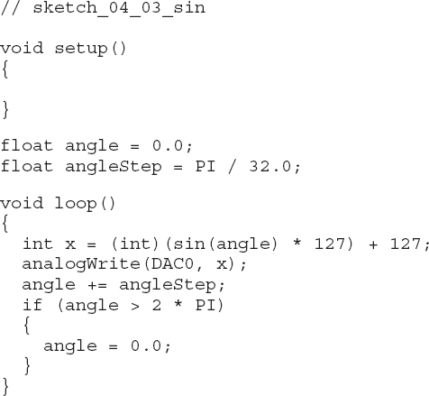
Measuring the signal on the output does, indeed, produce a nice sine wave at a frequency of just 310 Hz. The Arduino Due’s processor is clocked at 80 MHz, so you might have expected to generate a faster signal. The problem here is that you are repeating the same calculations again and again. Since they are the same every time, why don’t we just generate the values once and store them in an array?
The following code also generates a sine wave with 64 steps, but uses a lookup table of values that are ready to be written straight to the DAC.
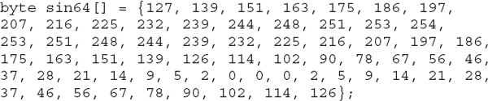
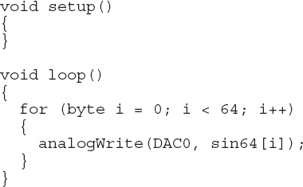
The waveform generated by this code looks just like the one from the previous example, except that it has a frequency of 4.38 kHz, which is about 14 times faster.
You can calculate the table of sin values in several ways. You can generate the numbers using nothing more complex than a spreadsheet formula, or you can write a sketch that writes the numbers to the Serial Monitor, where they can be pasted into the replacement sketch. Here is an example that modifies sketch_04_03_sin to print the values once to the Serial Monitor.
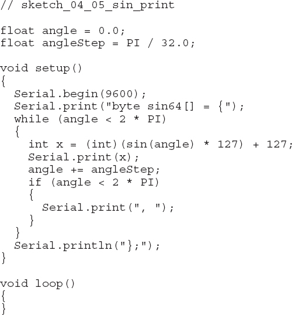
Opening the Serial Monitor reveals the code that has been generated (Figure 4-1).
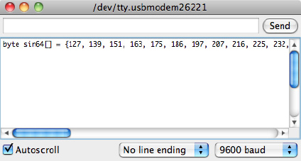
Figure 4-1 Using a sketch to generate code
Fast I/O
In this section, we’ll look at how you can improve the speed when turning digital output pins on and off. We’ll improve a basic maximum frequency from 73 kHz up to nearly 4 MHz.
Basic Code Optimization
Let’s start with the basic code to turn a digital I/O pin on and off using digitalWrite:
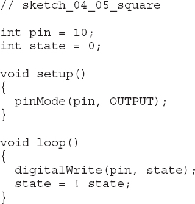
If you run this code with an oscilloscope or frequency counter attached to digital pin 10, you’ll get a frequency read of about 73 kHz (73.26 kHz on my oscilloscope).
Before taking the big step of using direct port manipulation, you can do a few things to optimize your C code. First, neither of the variables needs to be 16-bit ints; both can be changed to bytes. Making this change increases the frequency to 77.17 kHz. Next, let’s make the variable containing the pin name a constant by adding the const keyword before the variable. Making this change increases the frequency to 77.92 kHz.
In Chapter 2, you learned that the loop function is more than just a while loop as it also checks for serial communication. Therefore, the next step in improving the performance is to abandon the main loop function and move the code into setup. The code containing all these modifications is shown here:
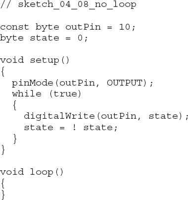
This further improves performance, giving us a new maximum frequency of 86.39 kHz.
Table 4-2 summarizes the improvements that you can make to the basic Arduino code, before taking the final step of abandoning digitalWrite for something faster.
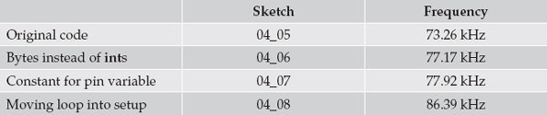
Table 4-2 Speeding Up the Arduino Code
Bytes and Bits
Before you can manipulate the I/O ports directly, you need to understand a little about binary, bits, bytes, and ints.
Figure 4-2 shows the relationship between bits and bytes.
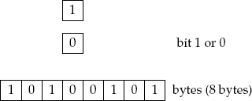
Figure 4-2 Bits and bytes
A bit (which is short for binary digit) can have one of just two values. It can either be 0 or 1. A byte is a collection of 8 bits. Because each of those bits can be either a 1 or a 0, you can actually make 256 different combinations. A byte can be used to represent any number between 0 and 255.
Each of those bits can also be used to indicate if something is on or off. So if you want to turn a particular pin on and off, you need to set a bit to 1 to make a particular output HIGH.
ATmega328 Ports
Figure 4-3 shows the ports on an ATmega328 and how they relate to the digital pins on an Arduino Uno.
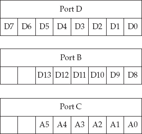
Figure 4-3 ATmega328 ports
It is no accident that each port has 8 bits (a byte), although ports B and C only use 6 of the bits. Each port is controlled by three registers. A register can be thought of as a special variable that you can assign a value to or read the value of. The registers for port D are shown in Figure 4-4.
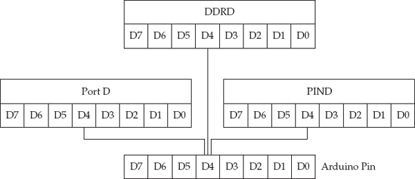
Figure 4-4 The registers for port D
The data direction register D (DDRD) has 8 bits, each of which determines whether the corresponding pin on the microcontroller is to be an input or an output. If that bit is set to a 1, the pin is an output; otherwise, it is an input. The Arduino pinMode function uses this.
The PORTD register is used to set outputs, so a digitalWrite sets the appropriate bit for a pin to be a 1 or a 0 (HIGH or LOW).
The final register is called port input D (PIND). By reading this register, you can determine which bits of the port are set HIGH and which are set LOW.
Each of the three ports has its own three ports, so for port B, they are called DDRB, PORTB, and PINB, and for Port C, they are DDRC, PORTC, and PINC.
Very Fast Digital Output
The following code uses the ports directly, rather than pinMode and digitalWrite:
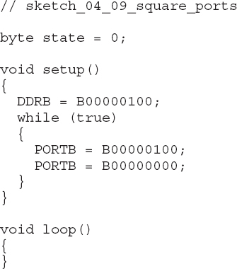
Here, we’re switching pin D10, which belongs to port B, so first we set the third bit from the left (D10) to be a 1. Note the use of a binary constant B00000100. In the main loop, all you have to do is first set the same bit to 1 and then set it to 0 again. You do this simply by assigning a value to PORTB, as if it was a variable.
When this code is run, it generates a frequency of 3.97 MHz (Figure 4-5)—nearly 4 million pulses per second, which is some 46 times faster than using digitalWrite.
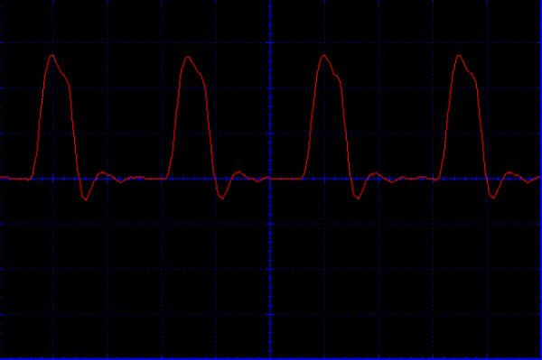
Figure 4-5 Generating a 4-MHz signal with an Arduino
The waveform is not very square, showing the kind of transients that you would expect at that frequency.
Another advantage of using port registers directly is that you can write to up to eight output pins simultaneously, which is very useful if you are writing to a parallel data bus.
Fast Digital Input
You can also use the same method of accessing the port registers directly to speed up digital reads. Although, if you are thinking of doing this because you want to catch a very short pulse, then using interrupts is probably best (see Chapter 3).
One situation in which using the ports directly is helpful is when you want to read a number of bits simultaneously. The following sketch reads all the inputs of port B (D8 to D13) and writes the result as a binary number in the Serial Monitor (Figure 4-6).
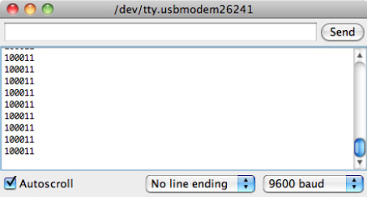
Figure 4-6 Reading eight inputs at once
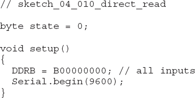
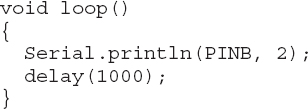
The DDRB register sets all bits to 0, designating all the pins to be inputs. In the loop, you use Serial.println to send the number back to the Serial Monitor, where it is displayed in binary. To force it to display in binary rather than the default of decimal, use the extra 2 argument.
Speeding Up Analog Inputs
Let’s start by adapting the benchmark sketch to see just how long an analogRead takes before trying to speed it up:
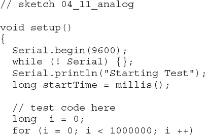
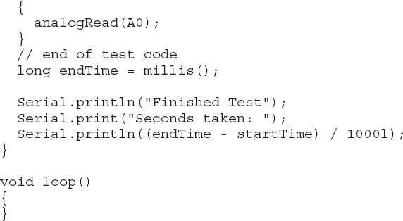
This sketch takes 112 seconds to run on an Arduino Uno. That means the Uno can take nearly 9000 analog readings per second.
The analogRead function uses an analog-to-digital converter (ADC) in the Arduino’s microcontroller. Arduino uses a type of ADC called a successive approximation ADC. It works by effectively closing in on the analog value by comparing it with a reference voltage that it adjusts. The ADC is controlled by a timer, and you can increase the frequency to make the conversion quicker.
The following code increases the frequency of the ADC from 128 kHz to 1 MHz, which should make things about eight times faster:
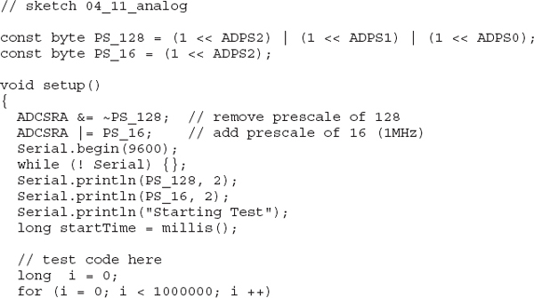
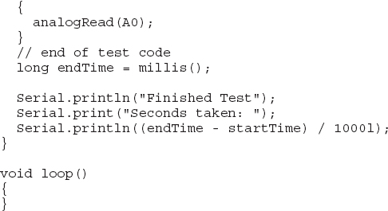
The code now takes only 17 seconds to run, which is roughly 6.5 times faster, increasing our samples per second to about 58,000. That is plenty fast enough to sample audio, although you won’t be able to store much of it in 2kB of RAM!
If the original sketch_04_11_analog is run on an Arduino Due, the test completes in 39 seconds. You cannot use the register trick we just tried on the Due, however, as it has a different architecture.
Summary
In this chapter, we tried to squeeze the last possible drop of juice out of our meager 16 MHz of processor power. In the next chapter, we’ll switch our attention to minimizing the Arduino’s power consumption, something that is quite important for battery- and solar-powered Arduino projects.